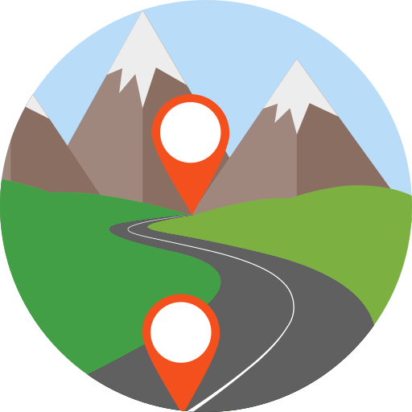

Rubik helps you choose the best user research method for the job.
Want to learn about user research methods and when to use which? Rubik can help. Check out our "getting started" video to learn how.
A-Z directory
20 of the most common user research methods explained with links to more resources.

Landscape map
A holistic view of all the methods in the user research landscape, mapped to the double-diamond.
Recommendation generator
Get a research method recommendation based on your specific needs.